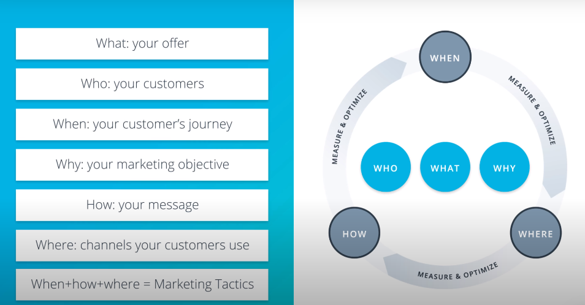

Framework-->is just a way to organize how you will do your marketing for your company, business or client
What-->what's your product or service,what's your business model and value proposition?
Who-->refers to your customers
When-->your customers journey, not all customers know about you, your marketing will depend on when customers are ready to receive it
Why-->is the most important part of the map in any marketing plan, why you engaging in marketing?? is your objective increase sales or brand awareness or mobile apps installs
How-->your message and content
Where-->channels your customers use

------------------------------------------------------------------------------------------------------------------